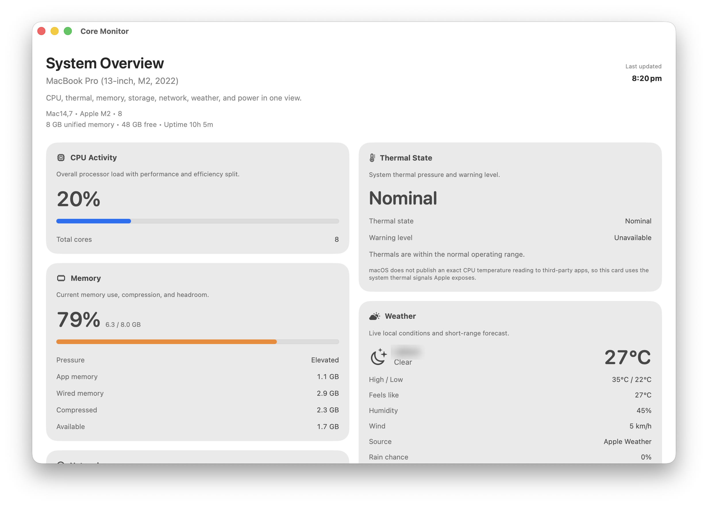
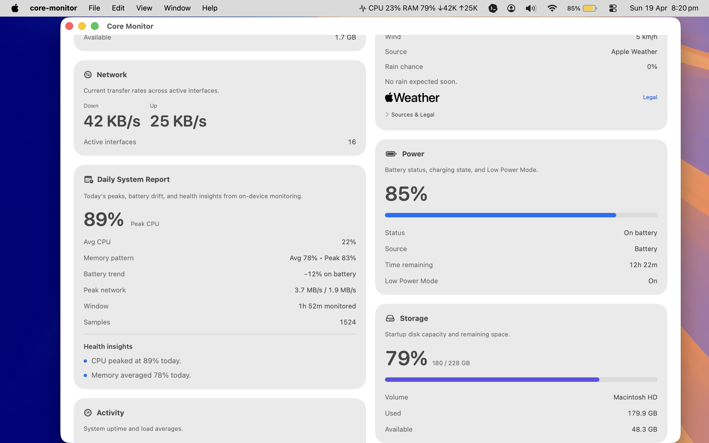

Installed by Apple
Reviewed, signed and updated through the App Store, inside the standard sandbox that comes with it.
Core-Monitor is listed as a free macOS app at Apple app ID 6762558526. Apple reviews, signs and delivers this sandboxed edition. It reads and displays system data but does not write to hardware. If fan control matters to you, the direct download is the build to use instead.


App Store rules shape this edition, so the boundaries are written down plainly instead of left implied.
Reviewed, signed and updated through the App Store, inside the standard sandbox that comes with it.
Live Weather is off by default. Turn on Enable Live Weather in Settings to request location access; decline, and the rest of the app runs unchanged.
No account, no analytics, no advertising code. The privacy policy is a short read on purpose.